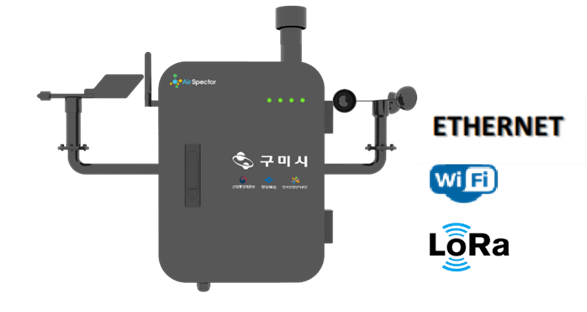
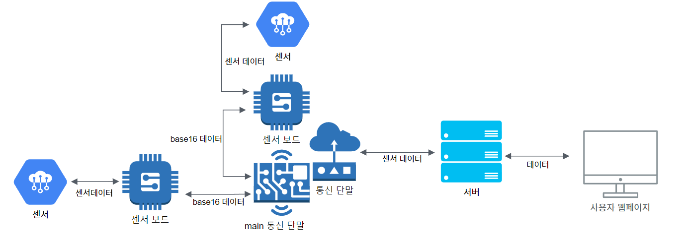
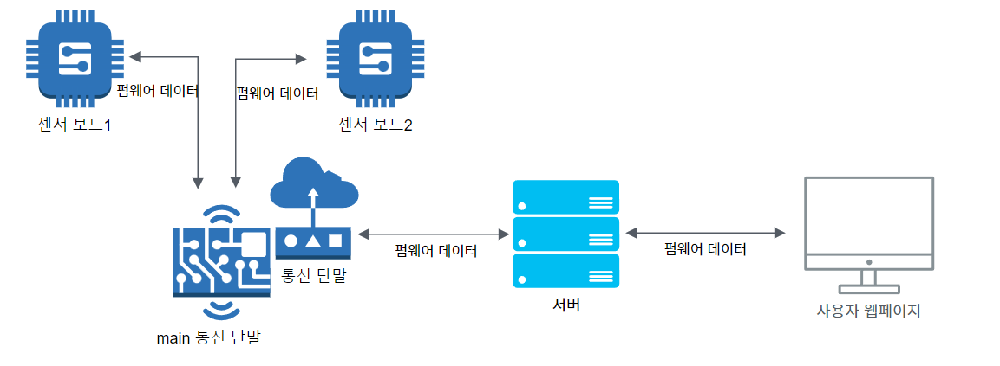

구미시 대기 환경 측정기
1. 제품 이미지

2. 주요 기능
14개의 센서로 데이터를 수집하여 서버에 전송. OTA
기능이 존재하고, 전송 주기를 변경하는 기능과 미전송 저장 기능이 존재
3. 아키텍처 다이어그램

▲ 통신 아키텍처 ▲

▲ OTA 아키텍처 ▲
4. 나의 역할
- OTA 기능 구현
→ 서버에 현재 단말의 버전 정보가 전달되고, 이전 단말 버전과 이를 비교. 버전 정보가 다르면 펌웨어 OTA 시작
- 신규 센서 추가
→ UART 통신 센서 추가
- 미전송 데이터 읽고 쓰기
→ Flash 데이터에 저장되는 전송 실패 센서 데이터를 저장하고 전송
- 보드간 데이터 연동
5. 결과 및 효과
- 구미시 화재 발생 이후 화재 경로 예측. 실시간 대기환경 모니터링